1.1 Onde fica o sítio no mapa oficial (divisões NUTS 2024)
NUTS = as divisões territoriais oficiais da União Europeia para estatísticas. São 3 níveis, do maior para o menor.
- NUTS I: Continente — Portugal divide-se em 3 grandes regiões: Continente, Açores e Madeira. O sítio fica no Continente. Fonte: INE “A implementação das NUTS 2024” / Regulamento Delegado (UE) 2023/674.
- NUTS II: Grande Lisboa — desde 2024, a Grande Lisboa é uma região deste nível: junta só os municípios a norte do Tejo da antiga Área Metropolitana de Lisboa (AML).
- NUTS III: Grande Lisboa — é também uma sub-região com 9 municípios, 81 freguesias e capital em Lisboa: Amadora, Cascais, Lisboa, Loures, Mafra, Odivelas, Oeiras, Sintra, Vila Franca de Xira. Fonte: INE NUTS 2024; Pordata.
- O que mudou de 2013 para 2024: a antiga AML deixou de contar como região e dividiu-se em Grande Lisboa (a norte do Tejo) e Península de Setúbal (a sul); nasceu ainda a NUTS II Oeste e Vale do Tejo.
- Área (tamanho): Grande Lisboa 1 389,97 km² (cerca de 1 390) · Lisboa 100,05 km² (cerca de 100). Fonte: INE Superfície NUTS-2024; Pordata.
- População: em 2021 (Censos) 2 062 306 / 545 796 · em 2025 (estimativa) 2 415 261 / 658 236 (INE rev. 22/06/2026; Pordata). Ou seja, entre 2021 e 2025 Lisboa ganhou 52 789 pessoas (+8,7%): nasceram menos 4 340 do que morreram, mas chegaram 57 129 migrantes.
- Densidade (pessoas por km²): Lisboa 6 579 (2025, a 4.ª mais densa do país) · Grande Lisboa 1 552 (2024).
- Papel da região: Lisboa é a capital — concentra governo, empresas, universidades, hospitais, cultura e grandes transportes (aeroporto, porto). Produz 90 686 M€ em 2024, ou seja 31,3% de toda a economia do país, 42 345 € por habitante (1.º lugar) — INE Contas Regionais.
- Ponto estudado: 38.75089, −9.17442 — zona da Estrada da Luz, entre Carnide e São Domingos de Benfica. Atenção: “Estranha da Luz” não existe nos mapas — o nome certo é Estrada da Luz. A altitude de 87 m é plausível (a zona anda entre 80 e 110 m) mas tem de ser confirmada com levantamento topográfico (MDT-DGT).
1.2 O sítio visto de cima e da rua (anexos)
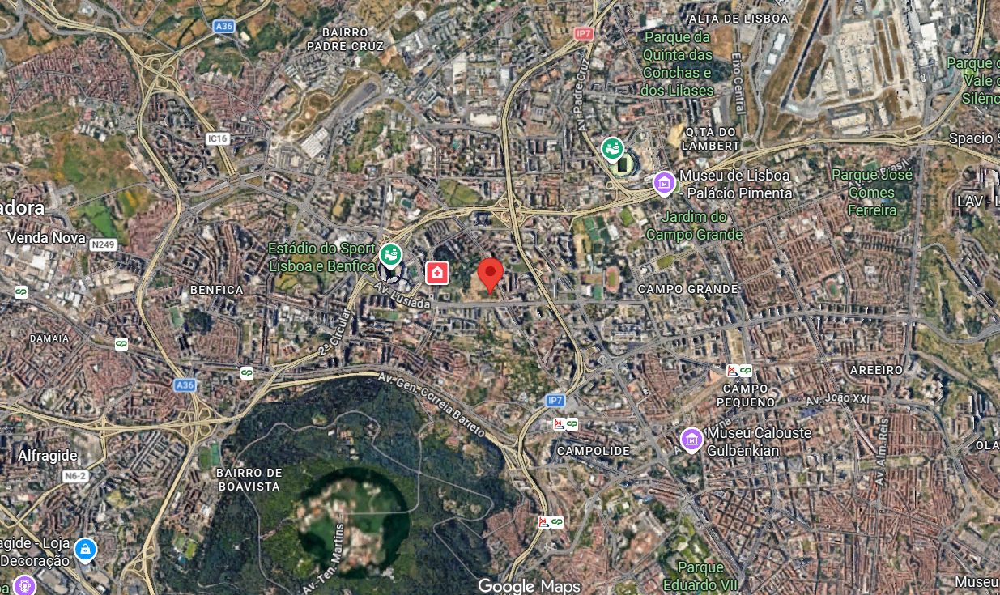
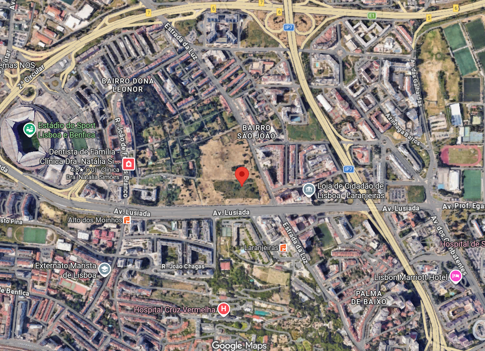
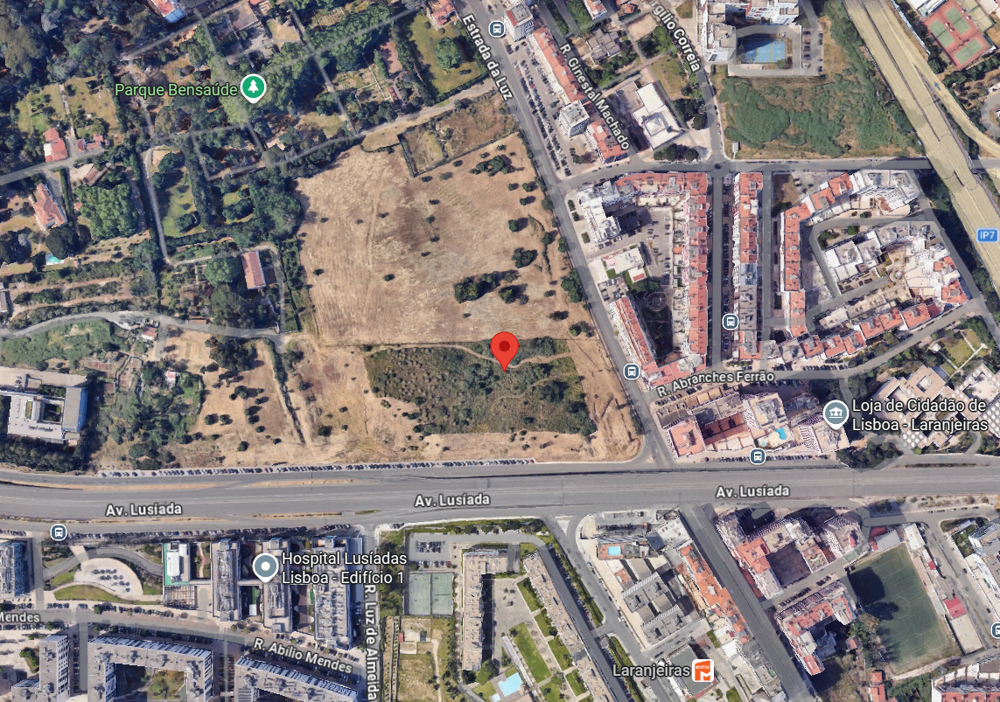


1.3 Quem vive aqui — 8 números (Censos 2021 + INE 2025)
A tabela mostra 8 indicadores, sempre com valor, ano e fonte (colunas: Indicador | Lisboa | NUTS III | Ano | Fonte). Só usámos o INE e a Pordata. “Não confirmado” = ainda não encontrámos o dado oficial. Detalhe em P1-TAB_quadro_socioeconomico.md. Em ecrã pequeno, deslizar a tabela — o cabeçalho e a coluna Ano ficam fixos.
| Indicador | Lisboa | NUTS III | Ano | Fonte/tabela |
|---|---|---|---|---|
| População residente | 545 796 (2021) ; 658 236 (2025) | 2 062 306 (2021) ; 2 415 261 (2025) | 2021 + 2025 | INE Censos [2021] + Pop. NUTS-2024; Pordata (rev. 22/06/2026) |
| Variação 2011–2021 (%) | −1,4 (2021; final −1,25) | não confirmado — NUTS-2024; ref. AML +1,7 | 2021 | INE Censos Prov./Def. |
| Índice de envelhecimento | 177/100 (2021) ; 174/100 (2025) | não confirmado — ref. AML 151 | 2021 + 2025 | Pordata (INE); INE Fig.8 |
| Densidade (hab/km²) | 5 455 (2021 calc.) ; 6 579 (2025) | 1 484 (2021 calc.) ; 1 738 (2025) | 2021 + 2025 | INE Pop.+Superfície (cálculo); Pordata |
| Alojamentos (n.º) | não confirmado (2021) ; 320 176 (2022) | não confirmado (2021/2025) | 2021 n/c + 2022 | Pordata (INE Obras); INE Censos |
| Escolaridade superior (%) | 36,8 (2021) | não confirmado | 2021 | INE Censos; Pordata (DGEEC) |
| Taxa de desemprego (%) | não confirmado (2021/2025) | não confirmado (2021) ; 6,3 (2025; 5,8 4.ºT) | 2021 n/c + 2025 | INE Emprego 4.ºT 2025; Pordata (IEFP) |
| Poder de compra (índice) | 186,3 (2021) | não confirmado — ref. AML 121,4 | 2021 | INE EPCC 2021 |
A Luz como rótula densa, qualificada e envelhecida da capital-metrópole: projetar proximidade intergeracional e habitação acessível que segure a migração sem expulsar quem cá vive.
1.4 O lugar em 9 temas (resumo + ideia-guia)
| Tema | Como está hoje | Fonte | O que isso obriga a fazer |
|---|---|---|---|
| 1 Cores | Amarelo-palha dos prados secos, verde com amarelo em março, cinzento do asfalto, branco/bege/ocre das casas e laranja das telhas | Fotos 2024/26 | Usar estes tons mediterrânicos como base; medir as cores exatas no local |
| 2 Solos | Terreno vazio com ervas e terra à vista; por baixo há rocha vulcânica (basalto) e calcário, muito mexido por aterros; ainda sem sondagem | LNEG 34-D; DGADR; CML | Furar e analisar o solo antes de projetar fundações; deixar a chuva infiltrar-se no terreno |
| 3 Plantas e bichos | Ervas secas, arbustos, provável erva-das-pampas (planta invasora, por confirmar) e árvores novas com tutores; nenhum animal fotografado | Fotos; ICNF | Manter as árvores, arrancar a invasora, semear prado que vive sem rega em vez de relva; fazer inventário na primavera |
| 4 Sismos | Lisboa toda tem risco sísmico alto; nesta zona espera-se intensidade VIII (como no terramoto de 1755) | CML; PDM; EC8 | Projetar pelas regras anti-sísmicas europeias e confirmar o tipo de solo no ponto exato |
| 5 Cheias | A 87 m de altitude, longe do rio e das zonas de cheia do Tejo; risco moderado de poças e enxurradas a descer para a Av. Lusíada | CML; APA; PDM | Portas acima do nível da rua e pavimentos que deixam passar a água |
| 6 Fogo | Na cidade o risco de fogo florestal é muito baixo; no lote há mato seco que pode arder em dias de calor; na Grande Lisboa houve 1 150 incêndios em edifícios em 2025 | CML; ICNF; ANEPC | Limpar faixa de mato, plantar espécies pouco inflamáveis, garantir entrada de bombeiros e bocas de incêndio |
| 7 Ar e barulho | O ar sofre com o trânsito (Av. Lusíada, Eixo Norte-Sul, 2.ª Circular); o barulho deve passar os 65 decibéis, mas nunca foi medido no ponto | CML mapa de ruído; APA | Consultar o mapa de ruído da Câmara no ponto exato; quartos virados para dentro, janelas anti-ruído |
| 8 Serviços | Zona bem servida a 5–10 min a pé: 2 hospitais, Loja do Cidadão, supermercados, escola, Estádio e Metro | Mapas 100m/200m/1km | Propor o que falta (não repetir o que já existe); lojas abertas para a Estrada da Luz |
| 9 Edifícios | Terreno vazio e vedado a descer de norte para sul; à volta, blocos de 5–9 pisos e o hospital; a Av. Lusíada funciona como barreira a sul | Fotos; plano Eixo Luz-Benfica | Criar passagem suave norte–sul, com altura igual à dos vizinhos |
Por outras palavras: o lote não é jardim nem quarteirão — é uma soleira entre dois mundos. Se o fecharmos em condomínio ou o cobrirmos todo de betão, perdemos o único respiro deste troço da Lusíada.
3 pistas para testar: 1) atravessar sem rasgar (caminho norte–sul a meia-encosta, com sombra e água); 2) plantar o seco (prado e árvores que vivem sem rega; arrancar as pampas); 3) construir só nas bordas e libertar o centro como jardim comum.
De onde vêm os números: ficheiro climático da estação Lisboa-Geof (38.7192,−9.1497; 8 760 medições, uma por cada hora do ano) · estação do IPMA na Tapada da Ajuda (médias oficiais de 1991–2020) · mapa Köppen = Csa, ou seja clima temperado de verão quente e seco (correção: o enunciado dizia Csb, verão ameno, mas agosto tem média das máximas de 29,0 °C — logo é Csa).

- O pior calor vai de meados de julho ao fim de agosto (médias 23–24,5 °C, picos 34–35 °C): valem paredes grossas e arejar a casa de noite, quando está 17–18 °C.
- A Nortada é gratuita: o vento vem de norte/noroeste 81,5% do verão — abrir a casa a norte e fechar/sombrear a sul e poente.
- 74% da chuva cai em 4 meses (out–jan) e no verão quase nada: telhados e jardins devem guardar a água de outono (cisterna) e travar as enxurradas curtas e fortes.
- Frio quase inexistente (geada: 0,1 dias por ano): a diferença de 10–12 °C entre dia e noite chega para arrefecer a casa sem ar condicionado.
- Sombra de maio a setembro (112 dias quentes): palas, estores e árvores de folha caduca a sul/poente; no inverno, com o sol baixo, deixar o sol entrar.
- As fotos confirmam: agosto seco e amarelo (plantas com sede) contra março verde e florido; o terreno desce para sul.
Onde os dois ficheiros concordam: verão quente e seco, inverno ameno, frio raro e vento norte. Onde discordam: a chuva do ano-tipo não é a média (para água, vale o IPMA); o pico de uma hora não é a média das máximas (são coisas diferentes); a diferença de altitude entre estações (9–17 m) é irrelevante.
R-V1 — Massa + cal (inércia e reflexão)
- Morada / distância
- Núcleo Carnide/Luz (Largo Chafariz–Igreja, ~700 m NW do sítio) + Alfama/Mouraria (tipo)
- Autoria / tipo
- Construção vernacular anónima (tipo Inquérito 1955–60)
- Ano / período
- Pré-1960 / vernacular — data ao edifício: não confirmado
- Fonte
- Arquitectura Popular em Portugal (OA 2004, OASRS 24957); CML/CEG Orientações Climáticas (2005); SIPA
Paredes grossas que guardam o fresco do dia para a noite + cal branca que reflete o sol + janelas pequenas com portadas de madeira. Lição para o projeto: peso e cores claras.
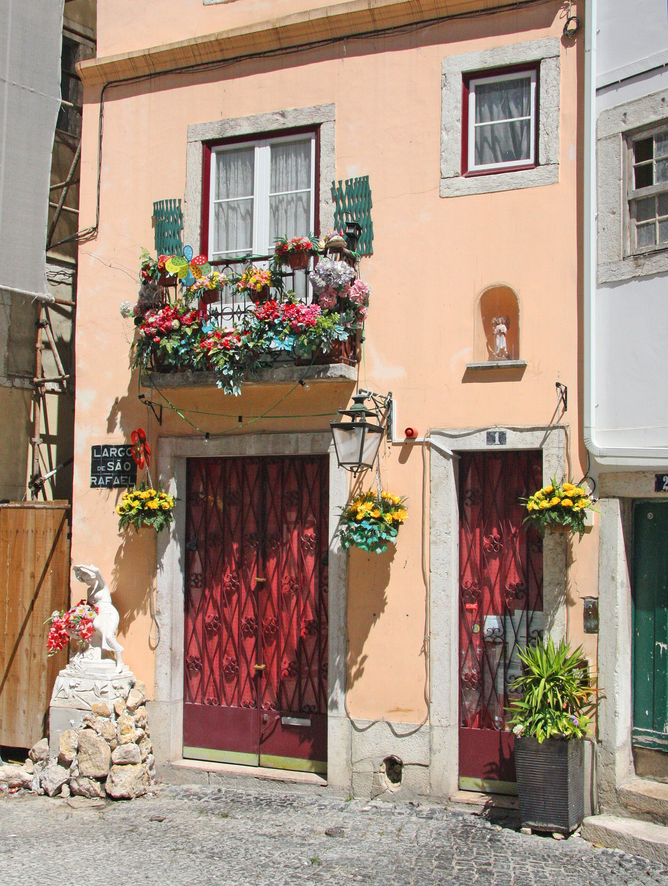
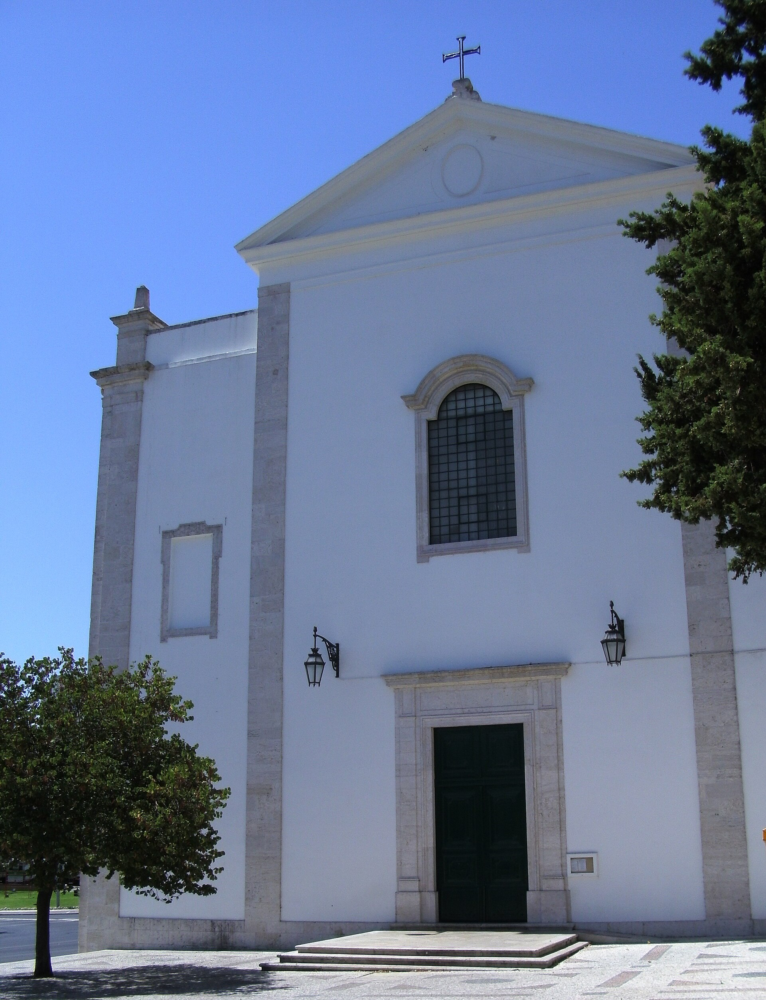
R-V2 — Sombra intermédia (beirado / varanda / toldo + caduca S/W)
- Morada / distância
- Baixa Pombalina / Bairro Alto + quintais Carnide–Benfica (CONFORM Piçarras 1756–63)
- Autoria / tipo
- Vernacular + pombalino (gaiola, saguões, portadas/estores)
- Ano / período
- Pombalino pós-1755; quintais séc. XVIII — detalhe varanda: foto própria
- Fonte
- OA Inquérito; CML Orientações; CONFORM; Cadernos Arquivo Municipal
Do fim da primavera ao início do outono, nenhuma janela a sul ou poente sem sombra que se possa abrir e fechar (estore, toldo ou portada); a varanda de ferro com toldo é a versão urbana da latada do campo. Lição: janelas pequenas a poente e galerias frescas a norte.
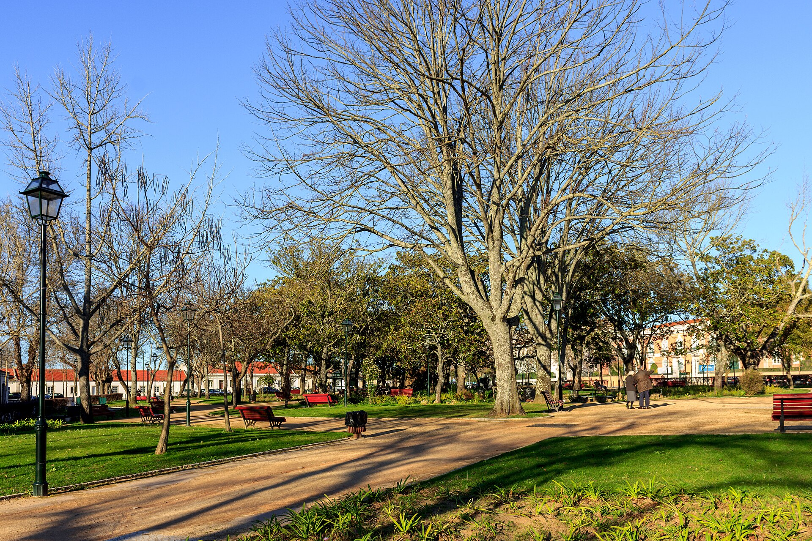
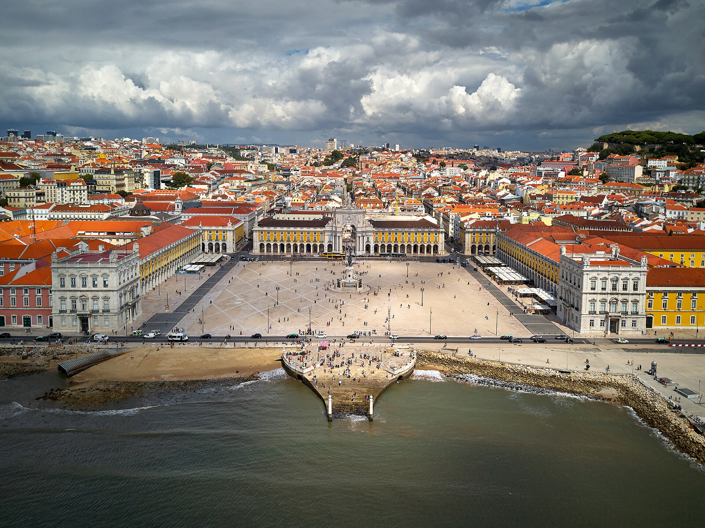
R-V3 — Ar e água (cruzada + pátio/quintal + telha/cisterna)
- Morada / distância
- Pátios Alfama/Graça (tipo tardoz+saguões) + quintas Carnide/Lumiar; foto tipo: Quinta do Monteiro-Mor, Lumiar (freguesia adjacente)
- Autoria / tipo
- Vernacular (pátio como poço fresco; TN Ago 17,5 °C, IPMA)
- Ano / período
- Vernacular — pátio na Luz ao edifício: não confirmado (foto própria)
- Foto + crédito
- Quinta do Monteiro-Mor (Commons, INDICE_FOTOS); pátio na Luz: foto própria a tirar
- Fonte
- IPMA 1991–2020 + EPW; CML ventilação; SIPA (Vila Berta, pátio na Graça, SIPA 5964 — foto não usada)
Casas atravessadas de norte a sul para a Nortada passar; o pátio ou quintal com árvores funciona como reserva de ar fresco da noite; a cisterna guarda a chuva de outono para o verão seco; nada de relva, que bebe demasiada água.
O-C1 — Hospital da Luz Lisboa
- Morada / distância
- Av. Lusíada, 100 — imediatamente a S do sítio, mesmo eixo
- Autoria
- Atelier RISCO (Trienal/ArchDaily); Salgado + Pinearq a confirmar
- Ano
- 2007 (Valmor 2007) + ampliação 2019 (RISCO)
- Foto + crédito
- Complexo Integrado de Saúde da Luz (Commons, INDICE_FOTOS); fachada Av. Lusíada: foto própria com data/GPS
- Fonte
- Trienal OHL; Luz Saúde; ArchDaily 985456
Hospital privado compacto com 193 quartos + 118 apartamentos para seniores, atravessado por uma rua interna e com jardins interiores desenhados à volta da luz natural.
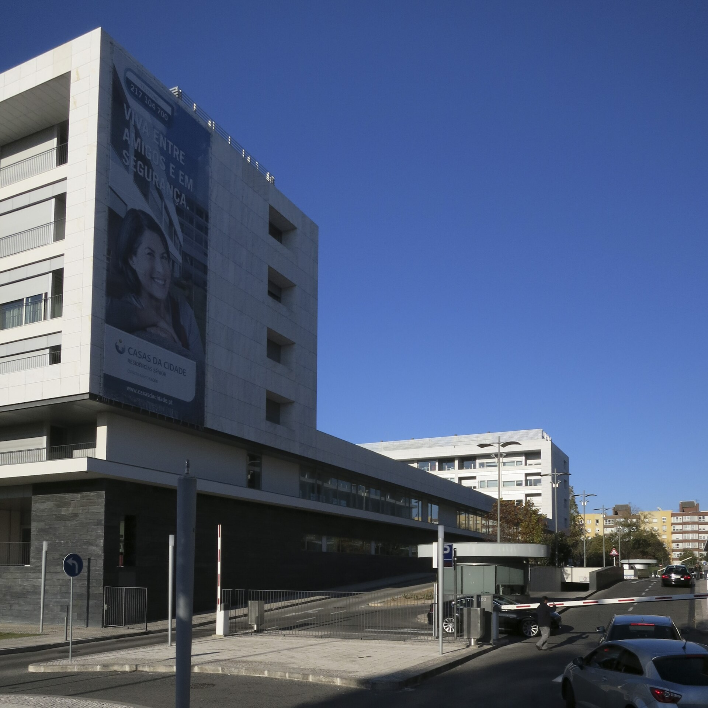
O-C2 — Estádio do SL Benfica / Estádio da Luz
- Morada / distância
- Av. Eusébio da Silva Ferreira — ~0,5–1,0 km W do sítio (medir em planta)
- Autoria
- HOK Sport (hoje Populous), Damon Lavelle — a confirmar em fonte primária
- Ano
- 25-10-2003 (clube; Populous indica 2004 — adotar 2003)
- Foto + crédito
- Exterior diurno (Commons, INDICE_FOTOS)
- Fonte
- slbenfica.pt; StadiumDB; Wikipédia (secundária)
Estádio do Benfica com cobertura translúcida (deixa passar a luz) assente em 4 arcos de aço de 43 m de altura; serve de contraponto de escala ao bairro. Lição para o programa: não copiar o estádio — inspirar-se na forma como usa a luz.
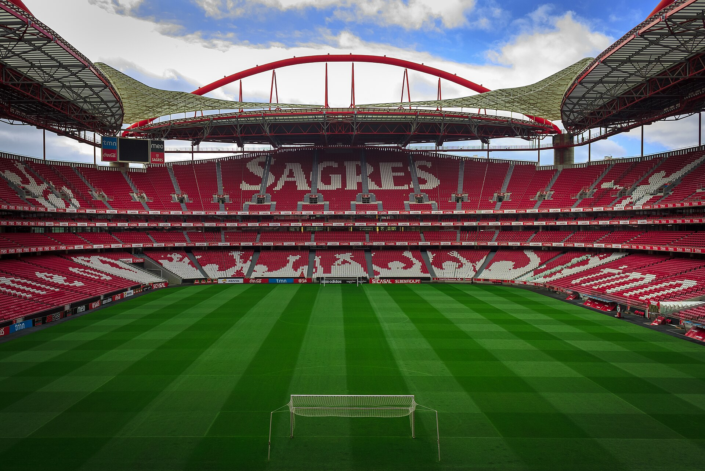
T1 — Arte urbana curada GAU-CML (tendência)
- Morada / distância
- Empenas B. S. João, muros do vazio e passagem Lusíada (suportes); referência: Street Art Park, Lumiar
- Autoria / tipo
- GAU-CML (DPC, desde 2008/09) + artistas; mural tipo: 120FAITH (florista)
- Ano
- 2009– (estratégia GAU); mural: ver página do ficheiro
- Foto + crédito
- Mural do florista (Commons, INDICE_FOTOS); empena/muro da Luz: foto própria com autorização e data
- Fonte
- CML GAU; AgendaLX; Património Cultural; Público 03-06-2022
Desde 2008/09 a Câmara autoriza e organiza pintura mural (roteiros, parceria com o Google Art Project, festival MURO e parque no Lumiar), com manutenção assumida. Lição: usar as empenas e muros cegos da Luz com acompanhamento da GAU.
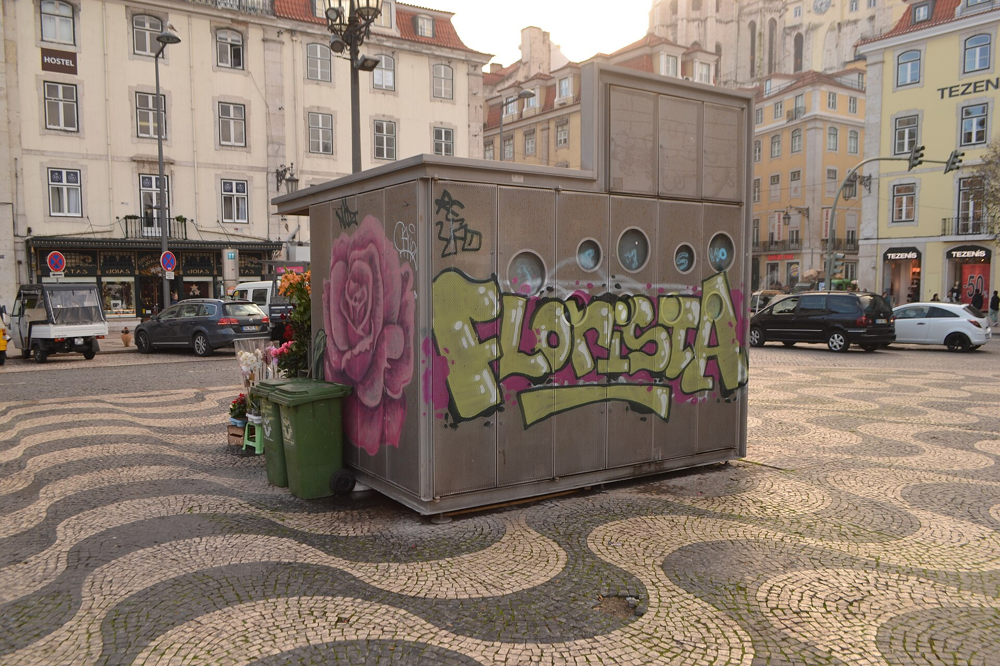
Créditos: Trienal OHL, Luz Saúde, ArchDaily 985456, SLB, RTP Arquivos (Colombo 09/1997), CML GAU/AgendaLX, Património Cultural, Público, SIPA/DGPC, CONFORM, Cadernos Arquivo Municipal. Distâncias e autorias finas: não confirmado — medir/confirmar (P6/visita).
FORÇAS (INTERNO +)
S1. Vazio-costura servida. Pendente N→S entre Estrada da Luz e Lusíada, hospitais/comércio/escola/Metro/Parque Bensaúde 200 m–1 km. Frente ativa + atravessamento.S2. Procura solvente e qualificada. Superior 36,8% (2021), IpC 186,3 (2021, 1.º), TCO 1 985,6 € (2023). Misto + materiais claros/inércia.
FRAQUEZAS (INTERNO −)
W1. Densidade + envelhecimento. 6 579 hab/km² (2025), 177/100 (2021), lote em pendente sem acesso/sombra. Rampas, intergeracional, custo+.W2. Vulnerabilidade sem ensaio. Sismo VIII, ruído >65 Lden, basalto/aterro sem sondagem. Hipótese até EC8+isófonas+sondagem.
OPORTUNIDADES (EXTERNO +)
O1. Janela demográfica. −1,4% (11–21) mas +8,7% (+52 789) 21–25 por migração +57 129 vs natural −4 340. Habitação acessível intergeracional.O2. Clima + verde + arte. Nortada 81,5% + amplitude 10–12 °C (sem AC); bacia Out–Jan + sequeiro; arte GAU + Hospital 2007 como luz/jardins.
AMEAÇAS (EXTERNO −)
T1. Calor/secura/chuvada. 112 dias ≥25, 36,8 ≥30, 44,0 °C ext.; 667,8 mm Out–Jan 74% vs <5 Jul–Ago; S29–35 23–24,5 med. Ilha calor + fogo pasto + escorrência.T2. Pressão + incerteza NUTS-2024. IpC/ganho altos com desigualdade; séries GL novas sem consolidar; sem PDM/cadastro há risco de fechar o vazio.
S2, W1, O1, T2 com valores INE/Pordata + ano (requisito P5). Ver também a prancha autónoma P5_prancha_SWOT_16x9.svg (16:9).
{kind=link}
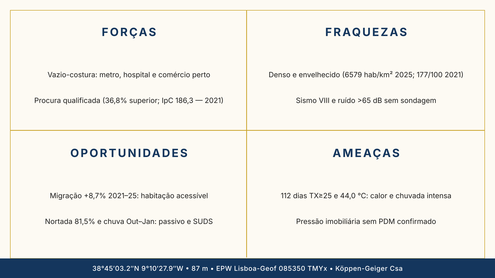
Duas formas para o edifício (1 vantagem + 1 problema cada, com esquema)
Vantagem: aproveita toda a Nortada, iguala a altura dos vizinhos e deixa o centro verde e silencioso.
Problema: a entrada a norte é estreita (bombeiros e lojas difíceis) e exige juntas anti-sísmicas e poucas janelas a poente.
Vantagem: a base enterrada mantém o fresco e trava o barulho da Lusíada; o pátio apanha sol de inverno e a cisterna guarda água; nada de relva.
Problema: se o pátio abrir mal a sul, bloqueia o vento e amplia o barulho — só funciona com 80% das casas ventiladas de lado a lado.
O que caberia no lote (hipótese — NÃO é um dado; faltam o PDM e o cadastro)
| Função | m² | Unidades | Notas |
|---|---|---|---|
| Habitação intergeracional T1–T3 N–S | 2 400–3 000 | 32–40 (30% T1 55 m², 50% T2 75 m², 20% T3 95 m²) | Responde à procura (O1) e aos idosos (W1); todas atravessadas pelo vento (regra R1) |
| R/C ativo Estr. Luz | 300–450 | 4–6 lojas 60–80 m² | Não repetir o comércio que já existe (ver Serviços, Prancha 1) |
| Equipamento (sala + creche/centro dia) | 200–300 | 120+100 m², 20–30 ut. | Apoio ao bairro (crianças de dia, seniores) |
| Cowork (piso sossegado) | 150–250 | 15–25 postos | Para a população qualificada (36,8%) e com poder de compra |
| Estacionamento (se PDM) | 600–900 | 20–30 + 60 bicis | Só se o plano obrigar; enterrado; redes por confirmar |
| Clareira (prado+bosquete+SUDS) | 1 200–1 800 (≥50% perm.) | sombra ≥40% | Metade do lote deixa passar água; sem relva; cisterna que segura ≥30 mm da 1.ª chuva; arte nos muros |
| Cisterna+técnicas/PV | 80–120 | 60–100 m³ | Guarda a água de out–jan para o verão |
| Total hipotético | ~3 700–5 100 | 32–40 fogos+lojas+equip. | A validar: cadastro, PDM e índice de construção |
Declaração e validação (texto único — igual a DECLARACAO_IA_Grupo07.md)
O que já confirmámos (e como)
Já confirmámos: o site da Câmara, a ficha do IPMA, que as duas obras existem (onde ficam e quem as fez) e os números da Pordata.
Confirmar o artigo do Plano Diretor no site da Câmara. Não usar regras de outros países.
Confirmar vento e sol no IPMA e no Portal do Clima.
Confirmar que cada obra existe e quem a desenhou (atelier, Câmara ou revista da especialidade).
Cada número da SWOT foi confirmado na fonte: INE ou Pordata (Fundação Francisco Manuel dos Santos) — sempre com valor, ano e tabela. Sem fonte, o ponto sai da SWOT.
- Fig. 1 — Planta 1 km (Benfica / Estádio)
- Fig. 2 — Planta 200 m (bairros e eixos)
- Fig. 3 — Planta 100 m (vazio Estrada da Luz / Av. Lusíada)
- Fig. 4 — Estrada da Luz 08/2024 vista SE (palha seca)
- Fig. 5 — R. Ernâni Lopes 03/2026 vista N (encosta florida)
- Fig. 6 — Köppen Climate Explorer (Csa)
- Fig. 7 — R-V1 Alfama (casa caiada)
- Fig. 8 — R-V1 Igreja da Luz, Carnide
- Fig. 9 — R-V2 Largo da Luz
- Fig. 10 — R-V2 Baixa / Praça do Comércio
- Fig. 11 — R-V3 (foto retirada do site; original arquivado em P4_fotos_exemplos)
- Fig. 12 — O-C1 Hospital da Luz (RISCO)
- Fig. 13 — O-C2 Estádio da Luz (exterior)
- Fig. 14 — T1 mural do florista 120FAITH (tipo GAU)
- Fig. 15 — Volumetria A (barra N–S + clareira, esquema)
- Fig. 16 — Volumetria B (pente + pátio S, esquema) · Fig. 16b — prancha SWOT 16:9 (ficheiro)